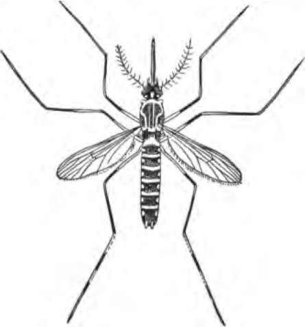

The Cause Of Sickness. Continued
Description
This section is from the book "The Human Body And Health", by Alvin Davison. Also available from Amazon: The Human Body and Health.
The Cause Of Sickness. Continued
Fig. 136. A clean glass and two glasses which had been used by many pupils. The microscope showed that the dirt on the two outer glasses consisted of saliva, dead bits of skin and millions of germs. From a photograph.
Experiments Showing How Tuberculosis May Be Caught
The lungs of ten healthy guinea pigs fed on milk containing tubercle bacilli became in about two months, badly affected with tuberculosis. The tubercular germs injected under the skin of hogs and cows, in most cases, produced disease in the lungs. Calves fed on the milk of tuberculous cows, only a few days, acquired tuberculosis of the lungs.
The sputum or spit of tuberculous patients contains millions of the disease germs. These may get on the furniture or drinking cup, or may be carried by flies from the spittoon to food, or may dry and be blown about in the wind. In any case they are liable to reach the mouth of a healthy person.
The Danger From Tuberculosis In Cows
A large number of cows have tuberculosis, but it is not often detected by a farmer until the animals become very sick. Nearly one third of the cattle of Great Britain are said to have this disease, but it is much less common among the cows of the United States. Fortunately less than half of the sick animals shed the germs in their milk, but vast numbers of the deadly germs are found in their manure. Where the dairyman is careless this often soils the cow, then becomes dry, and is later brushed off into the milk pail.
Fig. 137. Drawing of a tiny circle on the glass at the right in Figure 136 as seen under the microscope. The larger bodies are bits of skin from the mouths of pupils who drank from the glass, and the little dots are germs from their mouths.
Fig. 138. Germs of tuberculosis. Much enlarged. From a photograph.
Germs of tuberculosis have been frequently found in milk, and numerous cases are on record, where the use of milk from sick cows has given the disease to children.
Tubercular germs lodging in the lungs produce consumption) in the lymph glands, scrofula; in the skin, lupus; in the bones, white swelling, hipjoint disease or other trouble; and in the membranes of the brain and spinal cord, meningitis.
Typhoid Fever And Water
The germs of typhoid fever get into the body in most cases with food or water. In 200 epidemics, during each of which from ten to one thousand three hundred people suffered with the fever, about three fourths were caused by water and the remainder by milk.
In the winter of 1885, the excreta from a single typhoid patient were cast out on the snow along the mountain stream supplying Plymouth, Pennsylvania, with water. During the first thaw of spring, the germs were carried with the melted snow into the reservoir. Two weeks later numerous cases of fever appeared daily in the town, until 1,104 persons were sick. More than one hundred of them died. This shows how wrong it is to allow the waste from the body to run into a stream likely to be used for drinking.
Fig. 139. The germs causing typhoid fever. Much enlarged.
The scattered cases of typhoid occurring in many communities, may be due to a very slight pollution of the water, or to flies carrying the germs from sewers and other places to food.
Typhoid Fever Transmitted By Milk
Many severe epidemics of fever have resulted from bad milk. As the cows never have this disease the germs must get into the milk from an outside source. This is often the water used from a shallow well or stream to wash the cans. A single germ clinging to the can is able to grow so rapidly as to produce a million germs within twelve hours.
Frequently germs have been known to get into the milk from the hands or clothes of those who have just recovered from the disease, or from those who have been nursing a typhoid patient.
Germ Diseases Which Are Not Catching
The germs of lockjaw are present in the soil, and other places, but can do no harm unless they get into a wound with the air shut out. Boils or any other inflammation are the result of bacteria gaining entrance and growing beneath the skin. Several diseases, including hydrophobia, malaria, yellow fever and sleeping sickness, are produced by tiny animals put into the blood by the bite of other larger animals.
Fig. 140. The common mosquito on the left and the malaria mosquito at the right. Note the difference in positions.
Fig. 141. The mosquito which sucks the germs of yellow fever from the sick and then in biting healthy persons plants the germs in their blood.
Hydrophobia usually results from the bite of a rabid dog or cat, with the germs in their saliva. The parasites of malaria and yellow fever enter the body only by the bite of certain mosquitoes. The malaria mosquito may always be recognized by its spotted wings and the oblique position of its body to the upright support on which it alights. The germs of sleeping sickness are inserted by the bite of an African fly.
Cholera infantum and other sickness of the bowels in babies often result from the use of unclean milk and water.
Alcohol And Disease
The habitual use of liquor weakens the cells of the body which naturally kill off the harmful germs. Recent studies clearly show that those using alcoholic drinks, except in very small quantities, are not only attacked sooner than others with germ diseases, but are also less able to resist the effects of the disease.
The greatest Russian scientist has lately shown that alcohol paralyzes those elements in the body tending to prevent disease. By experimenting he found that in exposing rabbits to certain disease germs, only those animals which had been given alcohol ever contracted the disease.
Serious diseases of the liver, kidneys, blood vessels and heart often result from the long-continued use of beer or whisky.
Alcohol And Wounds
Persons hurt by serious cuts or bruises do not usually die because of loss of blood, but because germs enter the wound and poison the body. Injuries to persons daily drinking beer or whisky are much more likely to result in death than the same kind of injuries to those abstaining from strong drink. This is because the guard cells, the white blood corpuscles, which collect by millions in a wound, are hurt by the alcohol and cannot perform their duty any better than a drunken soldier on guard.
Alcohol And Pneumonia
Pneumonia is a deadly disease among drinking people. This is largely due to the fact that alcohol has weakened the white blood cells, which tend to destroy the germs of this disease. Alcohol also causes the blood vessels of the lungs to become more gorged with blood, and the mucous lining of the air tubes to become more inflamed.
Alcohol And Cholera
In the Old World cholera kills thousands every month in the year. Those who have studied the disease, say that strong drink is an important factor in weakening the body, so that the germs may begin their deadly work.
In a cholera epidemic in England, the death rate was four times as great among the drinkers attacked as among those abstaining from alcoholic beverages, such as beer and whisky.
Alcohol And Tuberculosis
This disease causes 5,000,000 deaths yearly in the world. Scientists, who have been studying the cause for this great sacrifice, declare that if the use of alcoholic drinks were stopped the number of deaths from tuberculosis would soon decrease one half.
In a large hospital for consumptives it was found that only six in every hundred persons had been living without the use of alcoholic drink. In a certain district in France where much wine is used, ten out of every thousand inhabitants die yearly of tuberculosis. In other districts where very little wine is used, only three persons out of each thousand living, die of this disease.
How Alcohol Causes Tuberculosis
Liquor always weakens the body cells, which in health are strong enough to eat the tubercle germs. Persons who spend money for drink are often unable to get a sufficient supply of good food. Lack of food makes the body weak, and, therefore, an easy prey to the disease. The natural appetite for food is sometimes deadened by alcoholic drink, so that too little real nourishment is taken to make the body strong.
Practical Questions
1. What causes most deaths? 2, What is a contagious disease? 3. Name some contagious diseases. 4. Who proved that certain germs cause disease? 5. Explain how it was proved that a certain germ causes anthrax. 6. Name eight diseases caused by germs. 7. How may all germ diseases be prevented? 8. Name five ways in which germs may get into the body. 9. Explain how germs of tuberculosis enter the body. 10. Describe an experiment showing how tuberculosis may be caught. 11. Why is there danger from tuberculosis in cows? 12. Name several diseases caused by tubercular germs. 13. How do the germs of typhoid fever usually enter the body? 14. Tell how the germs from one person caused the fever in over 1,000 others. 15. How do the fever germs get into milk? 16. Name some germ diseases which are not catching.
17. How do the germs of malaria and yellow fever enter the body?
18. What causes cholera infantum? 19. How may alcohol cause disease? 20. Why does alcohol make pneumonia worse? 21. What fact shows that alcohol makes cholera more severe? 22. Show that alcohol is a cause of tuberculosis.
Suggestions For The Teacher
By addressing the State Board of Health at the Capital of the state, numerous pamphlets on the prevention of disease may be secured free of charge. The following circulars on health may be had free by requesting them from the United States Department of Agriculture: Tubercle Bacilli in Butter; How Insects Affect Health in Rural Districts; Bacteria in Milk; Sanitary Milk Production; Facts about Milk. Many of the popular magazines also have timely articles relating to the cause and prevention of disease. From these several sources the children may gather many valuable facts which can be made the basis of short essays or language exercises and read before the class.
Continue to: